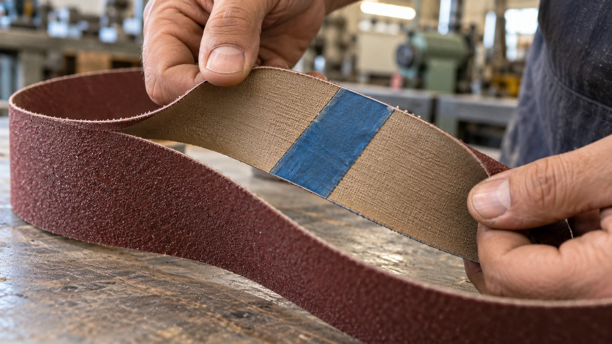

A cinta de lixa precisa formar um circuito fechado para circular pela lixadeira. A região em que suas extremidades são unidas é a emenda, uma parte importante da construção do produto.
Nas emendas de topo reforçadas pelo verso, a fita técnica conhecida no mercado como Mylar ajuda a manter as duas extremidades unidas durante o funcionamento.
Como esse tipo de emenda funciona
As pontas do material abrasivo são preparadas e posicionadas uma diante da outra. O reforço é aplicado no costado, na parte interna da cinta, com um sistema de colagem adequado.
Nesse tipo de construção, a fita faz a ligação entre as extremidades sem exigir a sobreposição completa de uma ponta da lixa sobre a outra.
O conjunto precisa suportar a tensão de trabalho e as flexões repetidas quando passa pelas rodas e pelos roletes da máquina.
Por que a emenda influencia o funcionamento
Além de resistir ao esforço, a região da união precisa passar pelo equipamento de maneira compatível com a aplicação.
Diferenças de espessura, rigidez ou alinhamento podem interferir na passagem da cinta e, em determinadas condições, contribuir para impactos e marcas na peça.
Por isso, a escolha do reforço considera o costado, a flexibilidade necessária, as dimensões da cinta e o tipo de trabalho.
A fita sozinha garante a durabilidade?
A qualidade depende do conjunto: preparação das superfícies, adesivo, reforço, alinhamento e condições do processo de colagem.
Depois da fabricação, o armazenamento, a tensão aplicada na lixadeira, o estado das rodas e a temperatura de trabalho também influenciam a vida útil.
Uma fita adequada faz parte de uma boa emenda, mas não compensa uma montagem incorreta ou condições de uso incompatíveis.
Toda fita Mylar é igual?
Existem reforços com diferentes espessuras e características. A cor pode ajudar na identificação de uma linha específica, mas não deve ser usada como regra universal de resistência ou indicação.
Também existem outros tipos de emenda. A construção adequada depende da cinta e da aplicação.
O que observar antes do uso
Confira se há descolamento, abertura, rasgos ou deformações. Não utilize uma cinta com a união danificada e siga as orientações de montagem e de sentido de funcionamento fornecidas para o produto.
Fale com a Robusta
Ao encomendar suas cintas na Robusta, informe a máquina e a aplicação. A emenda deve ser considerada junto com o abrasivo, a granulação e o costado.
Conversar pelo WhatsApp